AUTOMATIZACIÓN INTELIGENTE DE FACTURACIÓN Y PROCESAMIENTO DE COMPROBANTES
Plataforma de Extracción con IA, Escudo Financiero y Arquitectura Productiva para ALMAR Rosario S.R.L.
DIAGNÓSTICO OPERATIVO & COMERCIAL: FACTURACIÓN Y PROCESOS
Relevamiento integral de flujos de trabajo, dispersión de comprobantes y cuellos de botella en el circuito actual.
Facturas y notas de débito de armadores (Maersk, MSC), terminales portuarias y transportistas recibidas por casillas aisladas sin repositorio centralizado.
Digitación manual de comprobantes, CUITs, alícuotas y conceptos en Kipintoch con demoras operativas e incremento del riesgo de error humano.
Emisión de cotizaciones centralizada en el equipo comercial, con presupuestos que quedan sin seguimiento estructurado posterior ni registro de motivos de rechazo.
PORTAL CENTRALIZADO DE FACTURACIÓN ASISTIDO POR IA
Plataforma integral para recepción, extracción asistida, validación de reglas de negocio y control contable.
Ingesta automática de PDFs de navieras con lectura instantánea de emisor, CUIT, importes, recargos y alícuotas fiscales.
Cruce en tiempo real contra la carpeta de Kipintoch: bloqueo ante sobrecostos de armadores y semáforos de rentabilidad.
Transferencia directa a Kipintoch en 15 segundos, ahorrando más de $6.000.000 ARS/año frente a APIs cerradas.
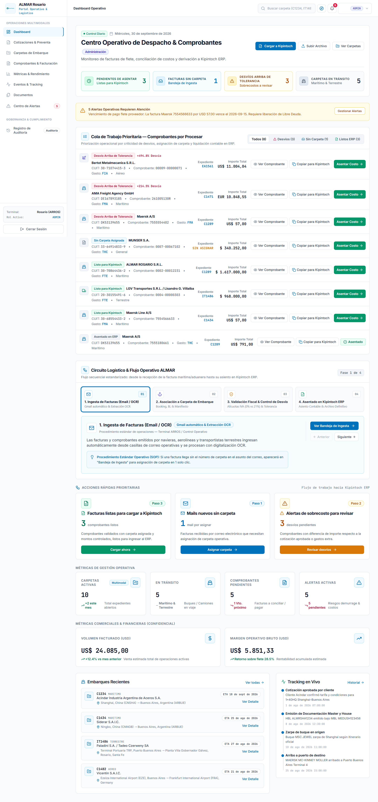
ARQUITECTURA DEL PIPELINE: DE LA FACTURA A LA CARPETA Y BANCO
Flujo continuo de cinco etapas automatizadas para garantizar consistencia contable, fiscal y bancaria.
• Webhook de correo y drop PDF.
• Filtro anti-spam y deduplicación.
• Respaldo digital inmutable.
• Lectura de CUIT y alícuotas AFIP.
• Normalización BUFF/BAF y flete.
• Parámetro store:false.
• Alerta preventiva < USD 200.
• Bloqueo estricto < USD 3.00.
• Provisión Sancor a 150 días.
• Formato tabular estructurado.
• Asiento contable en 15 seg.
• Cero costos de APIs cerradas.
• Validación obligatoria en cuenta.
• Recibo oficial con hash inmutable.
• Liberación comisiones reales.
TABLERO COMERCIAL Y CONTROL DE VIGENCIA DE TARIFAS NAVIERAS
Semáforo de vigencias (15/30 días) para impedir cotizaciones desactualizadas que generen quebranto económico.
• Vigente (verde): Tarifa dentro de la ventana de validez del armador.
• Por Vencer (amarillo): Alerta a 3 días del vencimiento.
• Vencida (rojo): Bloqueo automático para impedir cotizar con fletes caducados.
Las navieras modifican fletes quincenalmente. Se erradica la emisión de propuestas comerciales con costos antiguos que luego absorbe la rentabilidad de ALMAR.
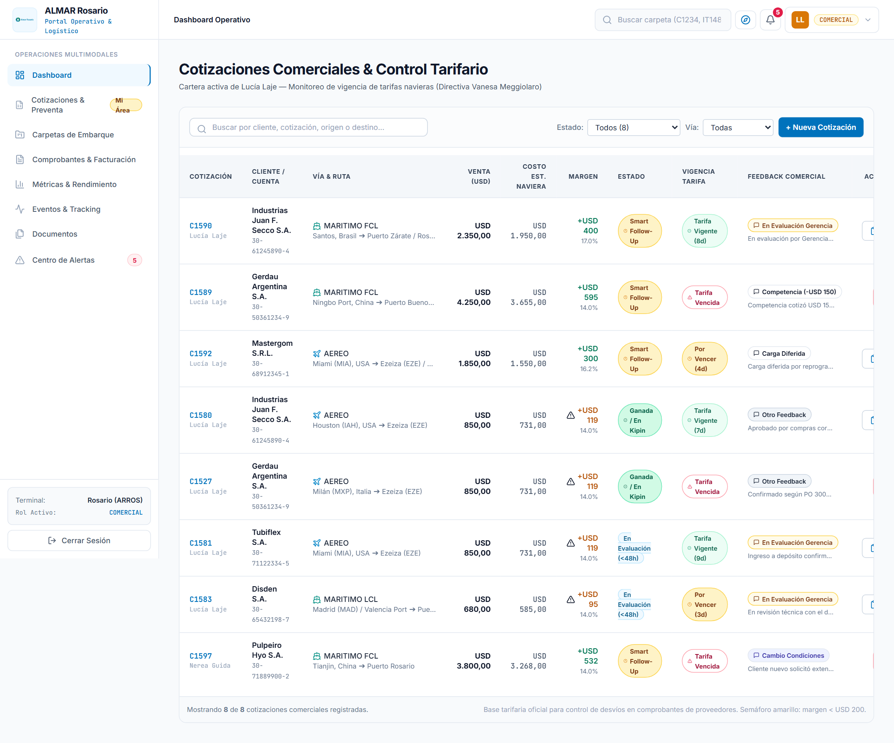
CALCULADORA PARAMÉTRICA CON PERFILES DINÁMICOS DE MARGEN
Agilidad para cotizar en segundos adaptando el margen al tipo de cliente, sin rigideces ni pérdida de control.
• CUENTA_ESTRATEGICA: Margen fino y competitivo para grandes clientes.
• ESTANDAR: Margen corporativo de equilibrio.
• SPOT_ALTO_RIESGO: Mayor cobertura para cargas spot volátiles.
• PERSONALIZADO: Ajuste libre con supervisión gerencial.
• Alerta preventiva < USD 200: Semáforo amarillo ante descalces cambiarios y gastos locales.
• Bloqueo estricto < USD 3.00: Candado que prohíbe operar a pérdida neta.
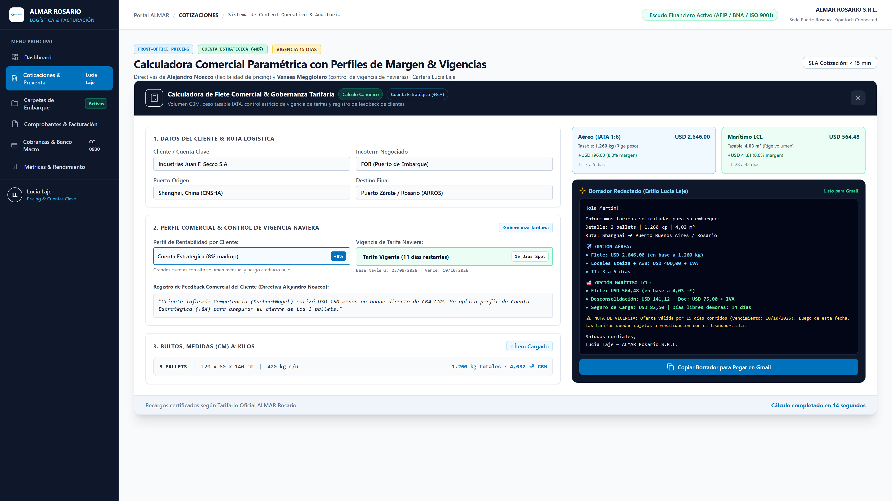
REGISTRO DE FEEDBACK CUALITATIVO & SMART FOLLOW-UP A 48 HS
Estandarización del seguimiento comercial y captura sistemática de pérdidas para renegociar contratos de volumen.
Filtro automático de presupuestos sin respuesta por más de 48 hs. Generación con 1 clic de plantilla formal personalizada lista para enviar por Gmail, con copia archivada bajo auditoría inmutable.
Registro cualitativo: "Competencia cotizó USD 150 menos", "Carga diferida", "En evaluación". Métrica acumulada para que el área comercial renegocie acuerdos de volumen con Maersk y MSC.
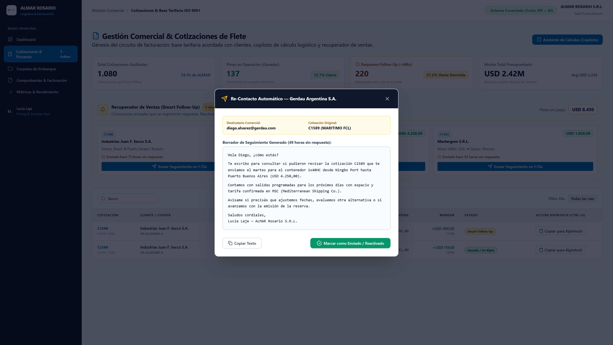
CONTROL OPERATIVO: TABLERO KANBAN & VISOR SIDE-BY-SIDE
Captura real de las dos interfaces centrales con las que opera el equipo de Administración y Finanzas.
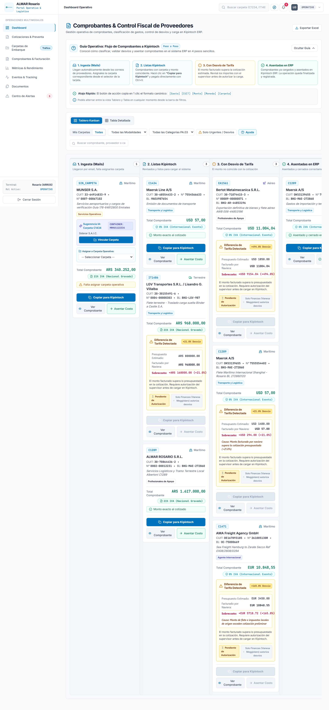
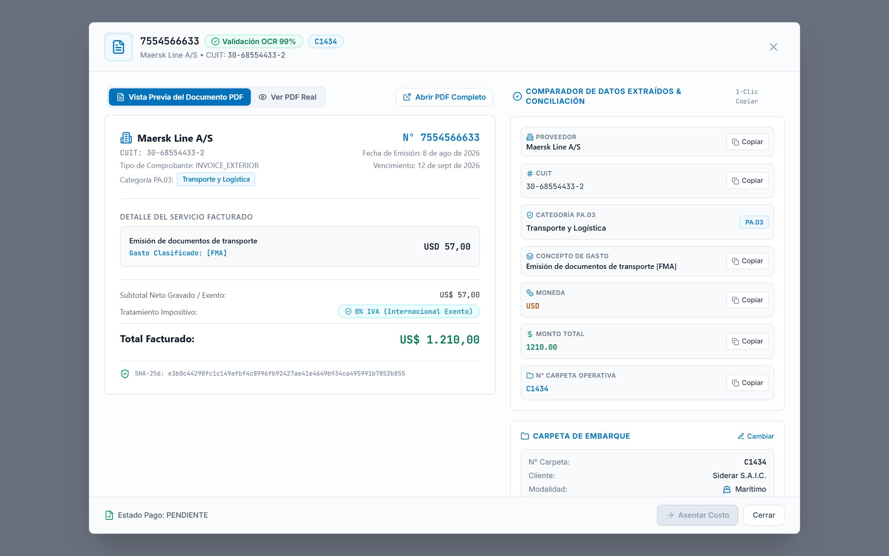
CASO C367: NORMALIZACIÓN SEMÁNTICA DE COMBUSTIBLE NAVIERO (BUFF)
Unificación de 15 variantes de Bunker bajo el código canónico BUFF y auditoría contra cotización FCA Guangzhou.
Co-loader MSL facturó conceptos de combustible con nomenclaturas no estándar (BAF, BRC, EBS). En el circuito manual generó demoras de imputación y riesgo de no trasladar el cargo al cliente final.
Mapeo semántico inmediato al concepto canónico fiscal BUFF exigido por AFIP. Cruce instantáneo contra lo cotizado: desvío detectado de USD 80.00 + BUFF bloqueado previo a emisión.
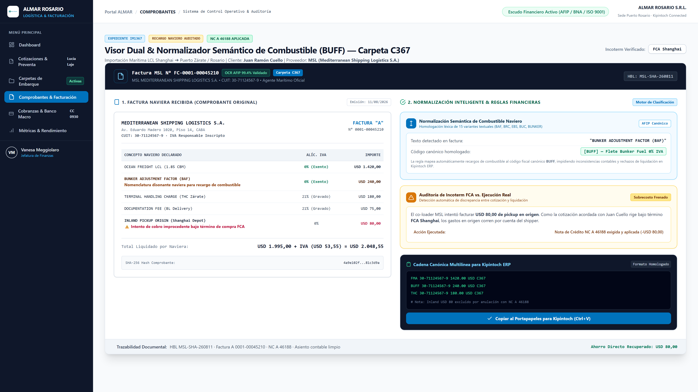
CASO C620: MÓDULO MULTIMONEDA BNA OFICIAL PARA DIVISAS COMPLEJAS (GBP)
Ingesta del tipo de cambio oficial vendedor del Banco Nación (BNA) a fecha de embarque con respaldo digital.
Flete facturado en Libras Esterlinas (£543 GBP). Kipintoch no gestiona conversión cruzada automática GBP/USD. Riesgo de cálculo manual inconsistente o manipulación del Permiso de Embarque con penalidades aduaneras de la DGA.
Ingesta obligatoria del tipo de cambio oficial vendedor BNA a la fecha de operación (£543 GBP @ 1.3628 = USD 740.00). Adjunto automático de la constancia digital oficial como respaldo documental inmutable para AFIP.
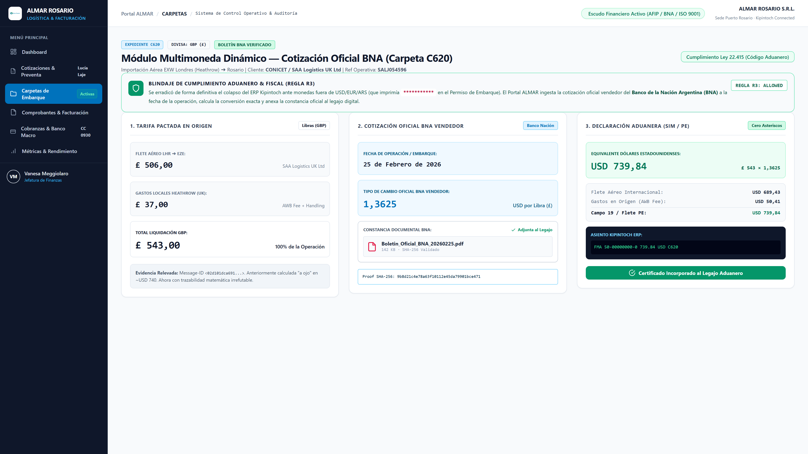
CASO SANCOR SEGUROS: PROVISIÓN DIFERIDA AUTOMÁTICA A 150 DÍAS
Blindaje de comisiones comerciales e imputación de costos pendientes ante demoras de pólizas de hasta 5 meses.
Sancor Seguros demora entre 120 y 150 días en remitir las pólizas definitivas. Liquidación prematura de comisiones comerciales a vendedores a fin de mes sobre utilidades irreales que omitían el costo real del seguro.
Devengamiento automático del 0,55% sobre el valor FOB en el ledger de la carpeta. Estado de comisión: RETENIDA_COSTOS_PENDIENTES hasta el arribo de la póliza real.
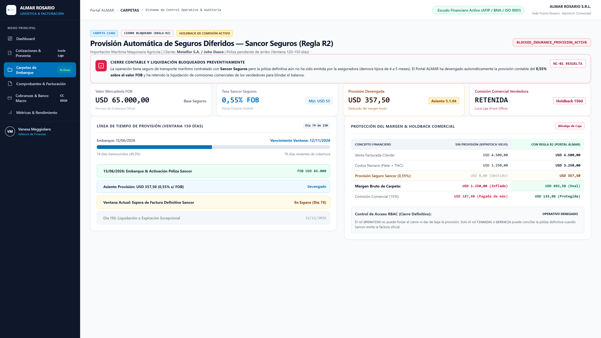
CASO C1234: ALERTA PREVENTIVA & AUTORIZACIÓN BIOMÉTRICA WEBAUTHN
Gestión de descalces de rentabilidad (< USD 200) y aprobación gerencial con firma criptográfica SHA-256.
Carpeta C1234 con margen proyectado de USD 142.50 (< USD 200). Semáforo preventivo por descalce cambiario en gastos locales (almacenaje / acarreo en pesos vs flete en dólares).
Override gerencial mediante huella digital (Windows Hello / Touch ID). Cero contraseñas compartidas. Generación de hash SHA-256 de 64 caracteres asentado en el log inmutable.
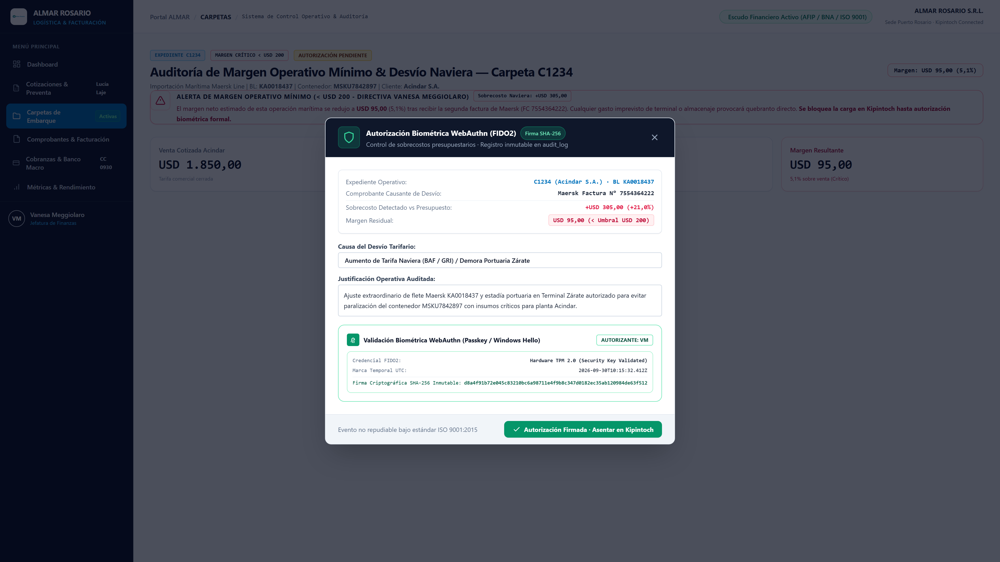
CASO TRIANGULACIÓN (NET TRADE MIAMI) & CONCILIACIÓN BANCO MACRO
Trazabilidad de prefacturas Net Trade LLC y validación en extracto de Banco Macro antes del recibo definitivo.
Enlace de prefacturas emitidas en el exterior con la carpeta operativa local en Kipintoch. Validación del recupero de costos locales antes de permitir el cierre contable (Precios de Transferencia y BCRA).
Flujo de cobranzas: EMITIDA_PENDIENTE_COBRO → EN_VERIFICACION_BANCARIA → COBRADA_CONCILIADA. Prohibición de emitir recibo o liberar comisiones sin acreditación efectiva en cuenta.
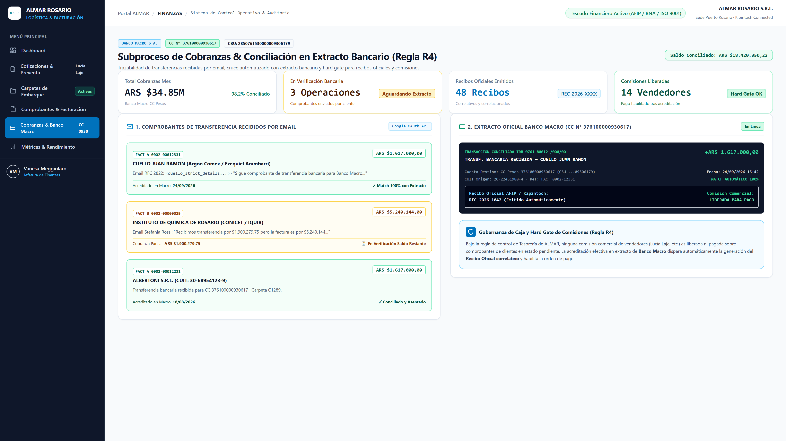
DEMOSTRACIÓN EN VIVO DE LA SOLUCIÓN EN FUNCIONAMIENTO
Transición al navegador (http://localhost:3000): prueba integral del circuito de facturación, comercial y cobranzas.
Carga de facturas reales de Maersk y MSC en PDF. Extracción automática en pantalla en menos de 5 segundos.
Activación del semáforo preventivo y bloqueo de emisión ante sobrecosto no presupuestado.
Aprobación con huella digital (WebAuthn), sello SHA-256 y transferencia de datos a Kipintoch en 1 solo clic.
PILOTO ASISTIDO: CHATBOT COPILOT DE IA & TRIAGE OPERATIVO (#TKT-XXX)
Asistente conversacional de inteligencia artificial para resolución inmediata de dudas operativas y captura ágil de feedback y mejoras.
Agente interactivo con IA embebido en el portal. Responde en lenguaje natural sobre causales de bloqueo, cálculo de márgenes, provisión de Sancor Seguros, tipo de cambio oficial BNA para GBP y desvíos navieros. Permite al personal consultar y registrar sugerencias de mejora sin burocracia.
Captura con 1 solo clic la pantalla actual, usuario activo, carpeta operativa y datos del comprobante, estampando un identificador inmutable #TKT-XXX en el audit_log para que soporte calibre reglas en horas.
MATRIZ DE RESOLUCIÓN DE DESAFÍOS OPERATIVOS Y ESTRATÉGICOS
Respuestas sistémicas y estructuradas a los principales desafíos de pricing comercial, control financiero y soberanía tecnológica.
SPOT_ALTO_RIESGO cotizás en 45 segundos. El semáforo advierte en amarillo (< USD 200) sin bloquear. Sólo se aplica bloqueo si da pérdida neta (< USD 3) o si la tarifa naviera está vencida.
store: false, cero reentrenamiento).
ARQUITECTURA DE PRODUCCIÓN, DIAGRAMA E INTEGRACIÓN EN INTRANET FIREBASE
Diagrama integral de componentes, soberanía Zero Data Retention (§ 3.2) y especificación técnica para embeber la solución en la Intranet de ALMAR.
• Iframe con CSP Blindado: Se embebe como solapa dentro de la intranet actual (https://intranet.almar.com.ar) habilitando la cabecera frame-ancestors segura.
• Single Sign-On (SSO): El portal valida el token JWT emitido por Firebase Auth. El personal ingresa con su mismo usuario y rol sin doble login.
• Firebase Hosting Rewrite: Mapeo opcional en firebase.json (/facturacion/**) para que corra como subruta nativa.
• Propiedad Exclusiva: ALMAR contrata directamente con OpenAI. Consumo a tarjeta corporativa (centavos por factura) sin intermediarios.
• Cero Almacenamiento: Parámetro contractual store: false: el documento se procesa en memoria volátil y se destruye inmediatamente al responder.
• Secreto Comercial: Ningún dato alimenta modelos públicos de IA.
• Cero Servidores Físicos: Vercel Edge + Supabase PostgreSQL en São Paulo (sa-east-1, latencia < 35ms) con 99,99% de uptime.
• Validez Pericial Plena: Autorizaciones sensibles protegidas con biometría WebAuthn (hash SHA-256 inmutable, Ley 25.506).
• Conciliación Bancaria: Validación en extracto de Banco Macro antes del recibo oficial.
HOJA DE RUTA DE PUESTA EN MARCHA (4 SEMANAS) Y DECISIÓN DIRECTIVA
Cronograma de 4 semanas hacia la producción definitiva y llamado a la decisión directiva.
• Alta de cuenta OpenAI propia de ALMAR.
• Despliegue en Vercel y Supabase sa-east-1.
• Conexión de buzón de correo vía webhook.
• Capacitación a Stefania y equipo.
• Ingesta asistida de 50 facturas reales.
• Widget de Triage activo (#TKT-XXX).
• Calibración de semáforos de vigencias.
• Perfiles de margen por cliente.
• Pruebas con extractos Banco Macro.
• Pase a producción definitiva.
• Corte de carga manual a Kipintoch.
• Tablero de métricas en vivo a Directorio.